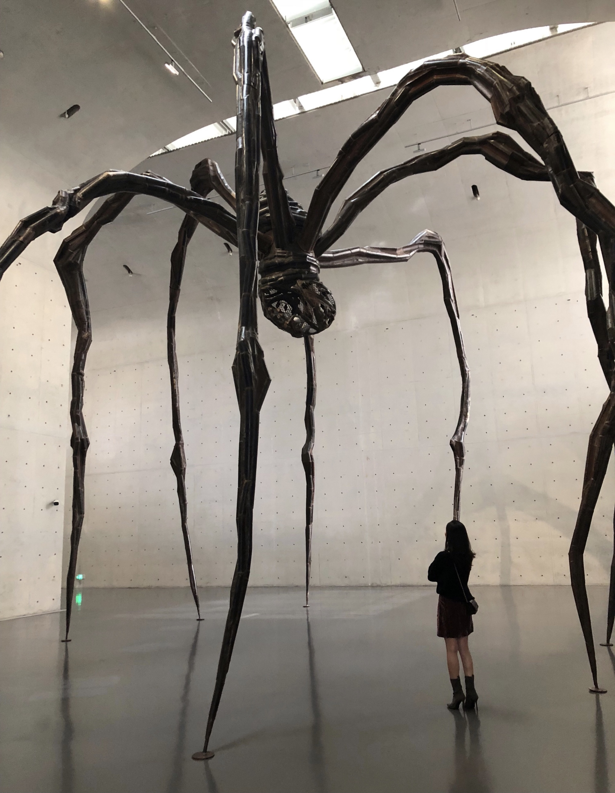

Hi, I am Joyce Yue Xu.
I am originally from Guangzhou, a beautiful city in the south part of China.
located on the Pearl River about 120km north-northwest of northwest of Hong Kong.
I love travel, food and different cultures.
I would go to different cities and countries with my family during summer vacations in the past ten years. However,
the pandemic has changed the way we used to travel since 2019.
My best memories about outdoor activities are staying in 2018, which is the same year I turned 20.
In the summer of 2018, I went to several cities and towns. Meet new people, get to visit several beautiful museums, and try different foods. It is one of my best years so far, which is remarkable and memorable. I hope you like my journey on this site.